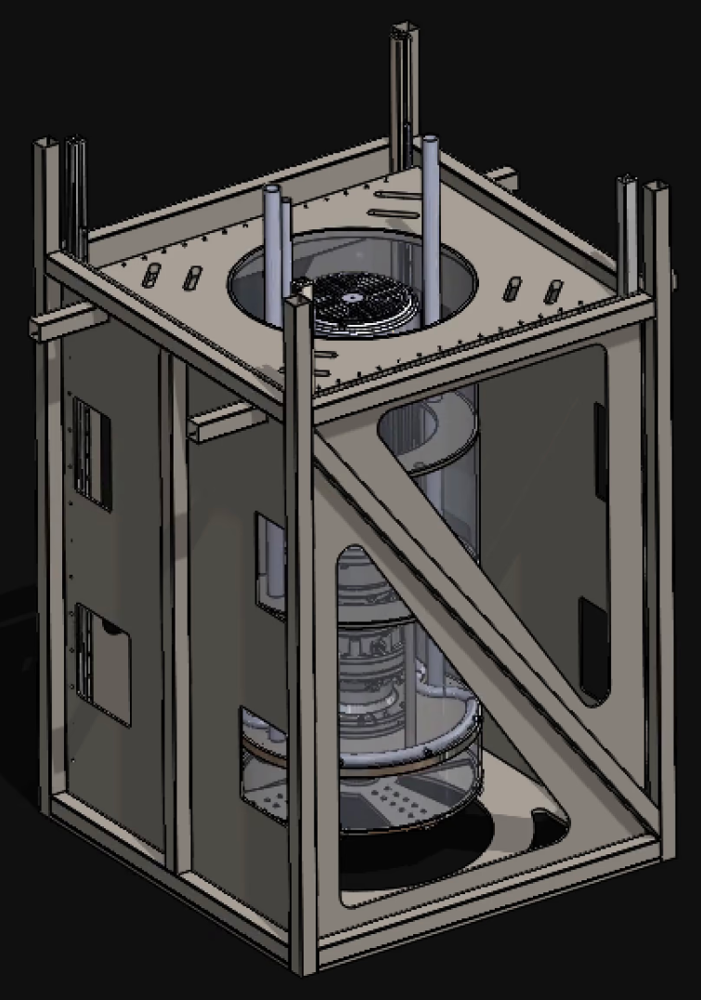
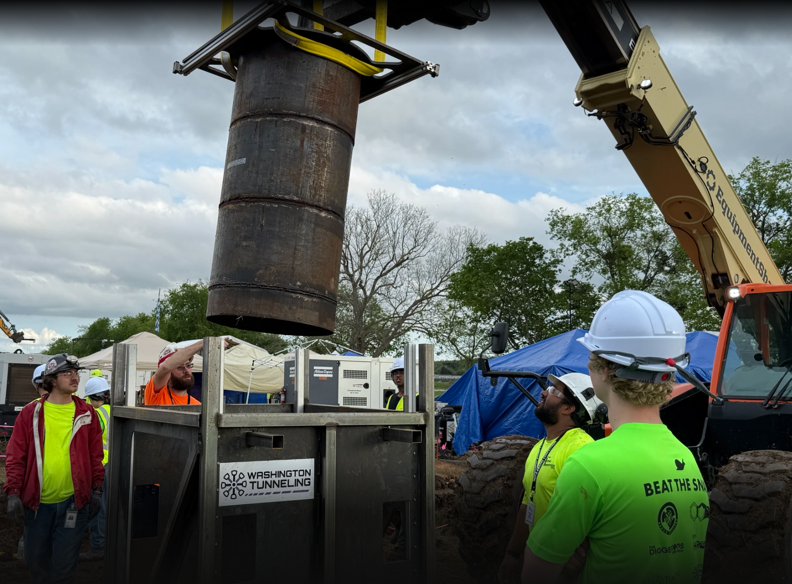
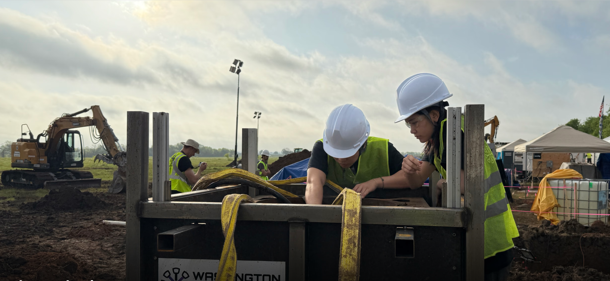

Washington Tunneling
Controls & systems



Overview
Tunneling club controls and site systems—server, ESP32, motors, pumps, sensors; real-time data and system reliability.
Controls & systems



Tunneling club controls and site systems—server, ESP32, motors, pumps, sensors; real-time data and system reliability.